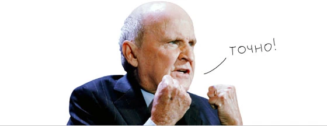
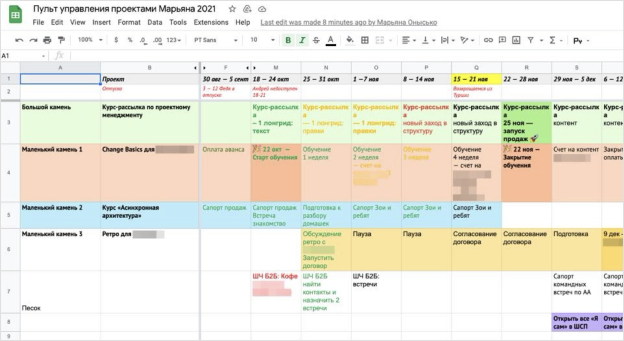
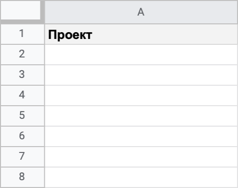
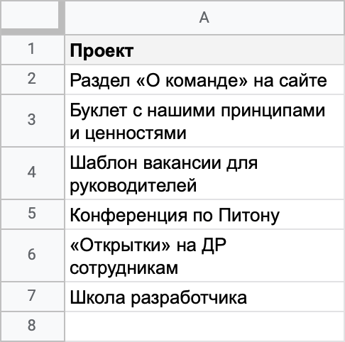

Письмо 1. Жопа Миры
Привет!
Это первое письмо краш-курса по затаскиванию проектов в срок. Краш-курс — значит быстрый, как скорая помощь.
🚑 И-У И-У И-У 🚑 И-У И-У И-У 🚑 И-У И-У И-У 🚑 И-У И-У И-У 🚑 И-У И-У И-У 🚑 И-У И-У И-У 🚑 И-У И-У И-У 🚑 И-У И-У И-У 🚑 И-У И-У И-У 🚑 И-У И-У И-У 🚑 И-У И-У И-У 🚑 И-У И-У И-У 🚑 И-У И-У И-У 🚑 И-У И-У И-У 🚑 🚑 И-У И-У И-У 🚑 И-У И-У И-У 🚑 🚑 И-У И-У И-У 🚑 И-У И-У И-У 🚑
У-у! У-у! Сегодня спасаем Миру, которая запуталась в клубке проектов. Поможем ей навести порядок на надпроектном уровне.
Большинство курсов по проектному менеджменту учат тому, что внутри проекта: как его вести от этапа к этапу. Этот навык у проджектов часто неплохо прокачан, а проблемы все равно есть. Часто дело в бардаке на надпроектном уровне, а про него мало кто говорит.
Поэтому мы решили выпендриться и начать курс с надпроектного уровня. Внутрипроектные проблемы тоже разберем, но уже в третьем и четвертом письмах рассылки.
А сегодня знакомимся с Мирой, у которой затык как раз на надпроектном уровне.
1. Погружаемся в проблему
Это проджект Мира
Мира узнала, что Марьяна помогает проектным менеджерам, и написала ей в личку.
Это проджект Марьяна
Марьяна зовет Миру на встречу, чтобы узнать больше о ее проблеме. Вот что Мира говорит:
— Как у тебя со сроками?
— Первый проект запустился день в день без факапов, везде соломка была подстелена. Я так умею. Но когда их стало больше — я потеряла контроль. Пока жестко не срывала сроков, но мне просто везло.
— Ты уверена, что проблема есть?
— Да. Я перестала видеть, где какой проект и что в каком статусе. Как я тебе писала, сейчас у меня единое месиво из срочных задач. На меня как будто летят горящие шарики, а я только и успеваю, что отбиваться от них.
— Руководитель как реагирует?
— Пока терпит. Он не из тех, кто пинает — скорее, даст облажаться. Но не знаю, на сколько его хватит. На днях спросил, когда можно будет дать мне новый проект, а я НЕ ЗНАЮ! Сегодня вспомнил про проект, который я полгода назад взяла в работу, а по нему прогресс нулевой. Я просто забыла про него.
— Что думаешь делать?
🚑
— В идеале — заболеть и лечь в 🚑 больницу на месяц, чтобы обнулиться. Ладно, шучу. Подумываю уволиться, пока все это не вскрылось. Типа, меня схантили.
— Мира, не торопись увольняться. Это все решаемо. Ты удивишься, как много проджектов проходили через эту ситуацию.
2. Ищем, за какую ниточку потянуть
— У меня тоже был период, когда я одновременно делала кучу проектов и в голове была каша. Иногда готовилась к встрече по одному проекту, а приходила и понимала, что встреча по другому. Я все просирала: дедлайны, качество. После каждой встречи с руководителем мне казалось, что меня уволят.
Я пробовала решить это тем, что тратила на работу больше времени, но это ничего не меняло. Заболеть или взять срочный отпуск спасает на неделю, потом все сначала.
Когда в очередной раз запахло жареным, я решила разобраться, в чем же дело. Оттолкнулась от цитаты:
«Что невозможно измерить, тем невозможно управлять»
Джек Уэлч, легендарный CEO General Electric
Я спросила себя: «Марьяна, сколько у тебя проектов сейчас в работе?» — и поняла, что не знаю.
— Я тоже не знаю, сколько у меня.
— Это первый признак, что на надпроектном уровне нет прозрачности.
3. Понимаем прозрачность
— Прозрачность — это знать, сколько у тебя проектов?
— Нет. Во-первых, прозрачность может быть разная. Если бы ты пришла ко мне с другой проблемой, мы обсуждали бы другой вид прозрачности. На надпроектном уровне прозрачность — это когда ты знаешь ответы на несколько верхнеуровневых вопросов:
- 1) Сколько у меня сейчас проектов в работе и какие именно?
- 2) Какой из них самый важный? Если будет мало ресурса и смогу поработать только над одним — над каким?
- 3) Какой сейчас статус по каждому проекту? Что именно делается прямо сейчас, какая задача стоит следующая в очереди?
- 4) По каким проектам все ок, а где пожар?
- 5) Когда у меня освободится время на новый проект?
— Если я посижу, я смогу ответить на все эти вопросы.
— Ключевое слово — «посижу». Чем больше времени тебе нужно, чтобы ответить на эти вопросы, тем меньше у тебя прозрачности. Если руководителю нужно час встречаться с тобой, чтобы понять, что в каком статусе, это очень не прозрачно. Прозрачно — это когда есть место, куда в любой момент любой член команды может посмотреть и узнать ответ на эти вопросы.
Пилоту прозрачность обеспечивает его приборная панель. Все в одном месте — перед глазами. Нужна секунда, чтобы достать любую инфу. Второму пилоту вся инфа тоже доступна, не надо назначать встречу и вытаскивать данные из партнера по команде.
На панели много всего, но пилот полностью контролирует ситуацию. Источник
Помню, как поняла эту простую мысль. Чтобы начать управлять ситуацией и быть предсказуемой для заказчиков — мне нужна такая приборная панель.
Я представляла себя в таком сценарии: я смотрю на экран и «слизываю взглядом» общую картинку по всем моим проектам, то есть ответы на вопросы, которые я перечислила выше.
4. Нащупываем вид панели управления
Мы долго мучились, как она должна выглядеть. Пробовали делать канбан-доску, постоянно апдейтить какие-то списки. Мы настраивали сложные панели в джире. Но все это было неудобно, иногда удобно, но очень сложно поддерживать.
В итоге остановились на простой табличке. Позже мы назвали ее «Пульт управления проектами».
Я сейчас тебе покажу мой сегодняшний пульт:
Как только появилась эта табличка — появилась та самая прозрачность.
— Ничего не понятно, но очень интересно ;-)
— Тебе не надо понимать мой пульт, это невозможно! Главное, чтобы ты понимала свой. Я позадаю тебе вопросы, и в конце мы по шагам придем к такому пульту для тебя.
5. Находим скрытые проекты
Первый шаг такой. Выпиши все проекты, которые у тебя сейчас в работе.
Устно не пойдет, лучше запиши. Вот тебе пустая табличка, начинай вносить в первую колонку все, что у тебя всплывает в голове.
— Готово! Теперь я знаю, что у меня семь проектов.
— Это все твои проекты?
— Да.
— Давай проверять. Во-первых, ты говорила, что у тебя есть проекты-брошенки. Ты внесла их в список?
— Нет. Я думала, только актуальное.
— Сейчас важно увидеть все. Вспоминай все, что «висит»: забуксовало, на паузе или команда переключилась.
— Готово.
— Во-вторых, открой календарь, пробегись по встречам, вспомни, чем ты занималась последние пару недель. К каким проектам относятся эти задачи?
6. Разбираемся, это проект или задача
— А как понять, что это — проект или задача?
— А как бы ты сама ответила?
— Проект большой, а задача маленькая. Только не понятно, что делать с сущностями среднего размера. Как определить, это большая задача или маленький проект? Например, у меня есть задача «Накидать идей с командой». Или, может, это маленький проект?
— Расскажи про результат. Что должно получиться на выходе?
— На выходе надо до Нового года провести презентацию для руководителей с лучшими идеями.
— Попробуй декомпозировать — какими шагами ты будешь продвигаться к результату, кто тебе нужен для этого?
— Надо:
- 1) найти видео, чтобы научиться фасилитировать брейнштормы,
- 2) посмотреть его и спланировать брейншторм с командой,
- 3) позвать команду, хотя все сейчас в аду,
- 4) провести сам брейншторм, зафиксировать все идеи, инсайты и гипотезы,
- 5) оценить идеи и выбрать лучшие,
- 6) собрать из них презентацию, в ней объяснить логику,
- 7) собрать руководителей на встречу,
- 8) провести презентацию результатов,
- 9) собрать фидбэк, поправить что-то,
- 10) результат отправить на почту.
Я все поняла: это не задача, а проект. И совсем не маленький!
— Как ты это поняла?
— Это не одноразовое действие, а длинная последовательность. К тому же вовлечены другие люди.
— Согласна, это проект. Проекты часто маскируются под задачу. Сделать невидимые проекты видимыми — один из первых шагов на пути к прозрачности в твоей работе.
ДАЛЬШЕ В ПИСЬМЕ ДАЛЬШЕ В ПИСЬМЕ ДАЛЬШЕ В ПИСЬМЕ ДАЛЬШЕ В ПИСЬМЕ ДАЛЬШЕ В ПИСЬМЕ ДАЛЬШЕ В ПИСЬМЕ ДАЛЬШЕ В ПИСЬМЕ ДАЛЬШЕ В ПИСЬМЕ ДАЛЬШЕ В ПИСЬМЕ ДАЛЬШЕ В ПИСЬМЕ ДАЛЬШЕ В ПИСЬМЕ ДАЛЬШЕ В ПИСЬМЕ ДАЛЬШЕ В ПИСЬМЕ ДАЛЬШЕ В ПИСЬМЕ ДАЛЬШЕ В ПИСЬМЕ ДАЛЬШЕ В ПИСЬМЕ ДАЛЬШЕ В ПИСЬМЕ ДАЛЬШЕ В ПИСЬМЕ ДАЛЬШЕ В ПИСЬМЕ ДАЛЬШЕ В ПИСЬМЕ
— Мира взяла и выписала все 14 проектов!
— Ого! Как она жила с таким кол-вом проектов?
— Сам не знаю, это как за 14-ю зайцами погнаться!
— Вот это даааа...
— Я то письмо прочитал и свои проекты выписал.
— И что? Не томи...
— 10 проектов!
— Что делать будешь?
— Марьяна в письме объяснила как уменьшить кол-во проектов.
— О, надо тоже почитать!
СОДЕРЖАНИЕ ПИСЬМА СОДЕРЖАНИЕ ПИСЬМА СОДЕРЖАНИЕ ПИСЬМА СОДЕРЖАНИЕ ПИСЬМА СОДЕРЖАНИЕ ПИСЬМА СОДЕРЖАНИЕ ПИСЬМА СОДЕРЖАНИЕ ПИСЬМА СОДЕРЖАНИЕ ПИСЬМА СОДЕРЖАНИЕ ПИСЬМА СОДЕРЖАНИЕ ПИСЬМА СОДЕРЖАНИЕ ПИСЬМА СОДЕРЖАНИЕ ПИСЬМА СОДЕРЖАНИЕ ПИСЬМА СОДЕРЖАНИЕ ПИСЬМА СОДЕРЖАНИЕ ПИСЬМА СОДЕРЖАНИЕ ПИСЬМА СОДЕРЖАНИЕ ПИСЬМА СОДЕРЖАНИЕ ПИСЬМА
7. Продолжаем искать невидимые проекты
8. Выбираем порядок ведения проектов
9. Понимаем time-to-market
10. Определяем WIP-лимиты
11. Какие WIP-лимиты бывают
12. Выбираем важные проекты по MoSCoW
13. Создаем пульт
14. Заполняем фокусы недели
15. Что делать с «убитыми» проектами
16. Проверочная работа
17. Делаем выводы
ВЫВОДЫ В КАЖДОМ ПИСЬМЕ ВЫВОДЫ В КАЖДОМ ПИСЬМЕ ВЫВОДЫ В КАЖДОМ ПИСЬМЕ ВЫВОДЫ В КАЖДОМ ПИСЬМЕ ВЫВОДЫ В КАЖДОМ ПИСЬМЕ ВЫВОДЫ В КАЖДОМ ПИСЬМЕ ВЫВОДЫ В КАЖДОМ ПИСЬМЕ ВЫВОДЫ В КАЖДОМ ПИСЬМЕ ВЫВОДЫ В КАЖДОМ ПИСЬМЕ ВЫВОДЫ В КАЖДОМ ПИСЬМЕ ВЫВОДЫ В КАЖДОМ ПИСЬМЕ ВЫВОДЫ В КАЖДОМ ПИСЬМЕ ВЫВОДЫ В КАЖДОМ ПИСЬМЕ ВЫВОДЫ В КАЖДОМ ПИСЬМЕ ВЫВОДЫ В КАЖДОМ ПИСЬМЕ ВЫВОДЫ В КАЖДОМ ПИСЬМЕ ВЫВОДЫ В КАЖДОМ ПИСЬМЕ ВЫВОДЫ В КАЖДОМ ПИСЬМЕ
Вот что я записала себе в блокнот:
-
1) Стремись к прозрачности. Прозрачно — это когда есть место, куда я или любой член команды может посмотреть и увидеть «общую картинку» по моим проектам.
-
2) Важно развивать «зоркость на проекты». Они часто мимикрируют под задачи или просто прячутся: особенно проекты, в которых я сама себе заказчик, проекты по построению процессов или проекты — консервные банки.
-
3) Надо узнать больше про канбан и методы визуализации. Они помогают распутывать большие и маленькие клубочки.
-
4) Когда я делаю много проектов одновременно — это невыгодно бизнесу. Надо ограничивать WIP-лимиты, чтобы сократить time-to-market и принести больше ценности.
-
5) Нормальный WIP-лимит — от 1 до 5, максимум до 7, если проекты маленькие. Выяснять идеальный для себя WIP-лимит надо экспериментально. Я начну с WIP=4.
-
6) Чтобы объяснить это коллегам, надо задать задачку про параллельное и последовательное ведение проектов.
-
7) Проще всего приоритизировать с помощью MoSCoW. Можно и как-то еще, главное — приоритизировать, а не брать все подряд.
-
8) Веди пульт управления проектами, чтобы всегда видеть большую картинку. И чтобы другие тоже могли ее видеть.
-
9) Чтобы легче держать «общую картинку» по проектам, надо научиться мыслить вехами-неделями или делать Zoom-In — Zoom-Out. Заполнение фокусов или вех в пульте тренирует этот навык.
-
10) В следующий раз спросить у Марьяны, как с помощью пульта видеть, в каком проекте пожар, а в каком все хорошо.
335
страниц А4
6
писем
100%
примеры из практики